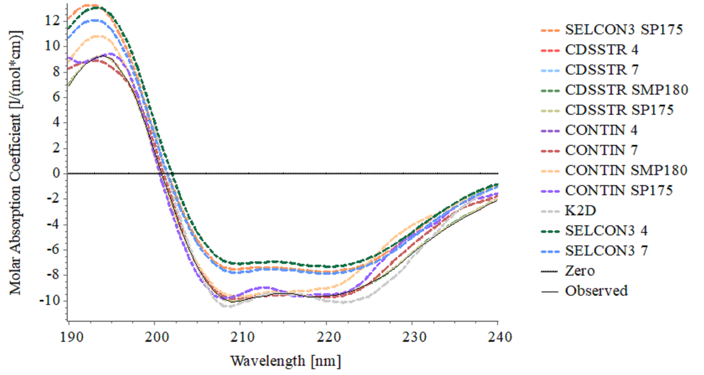
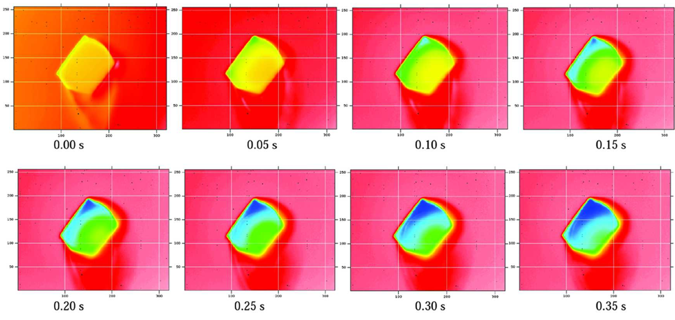
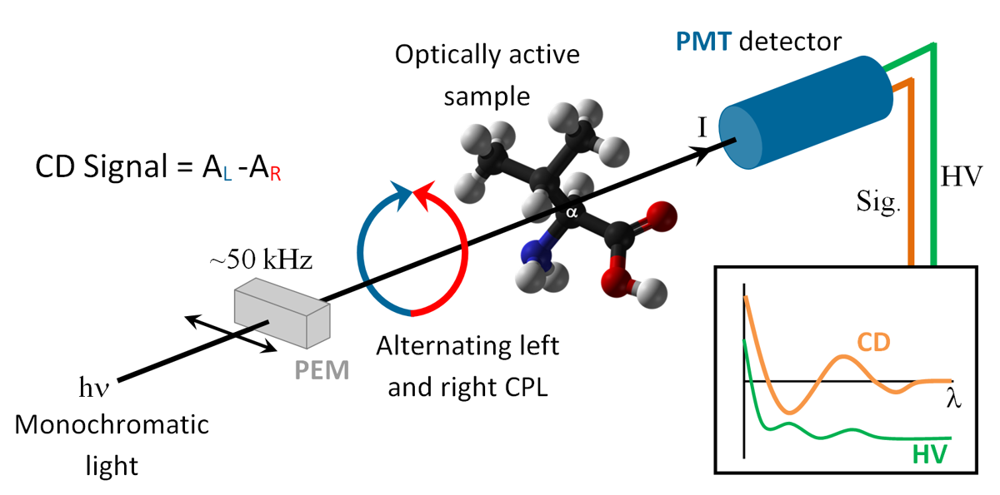
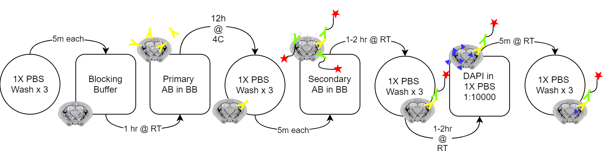

Heather  MacGregor
MacGregor
Purification and Analysis of WT Uricase
March 12, 2020Abstract
|
Urate oxidase (uricase, UOx, EC 1.7.3.3) catalyzes the O2 degradadation of UA into 5-hydroxyisourate, the first step in a pathway leading to allantoin, an easily-excretable substance 5-10× more soluble than UA.1 Although UOx is an endogenous enzyme found in most mammals, it is inactivated in humans. However, recombinant UOx species, such as Rasburicase, have shown to be promising candidates for the treatment of diseases including hyperuricemia and tumor lysis syndrome. However, uricase tends to form aggregates in solution that are highly immunogenic. Previously, XL-1-Blue Supercompetent E. coli were transformed with plasmids containing the sequences for C319* and C319*-C253R mutants of Bacillus subtilis UOx. These mutants were designed in order to prevent this phenomenon of aggregation. Here, the wild-type enzyme is purified from the cell lysate of BL21 Competent E. coli cells. The purified WT enzyme will be used as a baseline for kinetic and light-scattering studies of the recombinant mutants. |
The Gold-Catalyzed Rearrangement of Propargyl Alcohols
March 02, 2020Abstract
|
Ferrocene, acetic anhydride, and a catalytic amount of phosphoric acid were combined in a small round-bottom flask fitted with a calcium chloride drying tube (Tab. 1). The flask was swirled in a hot water bath to mix the reagents for 10 minutes. After removing the flask from the heat source, the reaction mixture was analyzed by TLC using a 1:4 ether:hexane solution as solvent. |
Synthesis and Purification of Acetylferrocene
February 26, 2020Abstract
|
Ferrocene is an organometallic compound first reported in 1951 and was the first known example of a class of compounds known as sandwich compounds, in reference to the iron(II) cation ”sandwiched” between two aromatic cyclopentadienyl anions. This structure is experimentally supported by the 1H-NMR spectrum of ferrocene. The spectrum displays a single peak at 4.17 ppm with an integration value of 10; because all the hydrogen atoms present in the two cyclopentadienyl anions are equivalent, all 10 π orbitals on the ring structures must participate equally in coordination to Fe(II). Ferrocene exhibits chemistry similar to benzene and other aromatic systems, and has been used in polymer synthesis, small medical devices, and as an ”anti-knock” additive in gasoline. |
Circular Dichroism Characterization of Proteins
January 19, 2020Abstract
|  |
The scientific goal of this experiment is to determine the percent- age of different secondary structure elements in a folded based on the electronic vibrational circular dichroism spectrum of the dis- solved protein. The educational goals of this experiment are: i) to expose you to spectropolrimetric techniques, ii) to allow you to review of protein secondary structures, and iii) the application of linear algebra to multi-wavelength data. |
Determination of activation energy of amide bond hydrolysis
January 31, 2020Abstract
|
The scientific goal of this experiment is to determine the activation enthalpy for the hydrolytic cleavage of the amide bond in 5-hydroxyisourate. The main educational goal of this experiment is to learn how to use UV-Vis spectrophotometers to measure reaction rates, and how to mathematically analyze reaction kinetics data. |
Structural Analysis of Lipids by Nuclear Magnetic Resonance
January 19, 2020Abstract
|
The objective of this experiment is to use Nuclear Magnetic Resonance (NMR) spectroscopy to identify the components of and determine the qualitative composition of a mixture made from two fairly similar fatty acid methyl esters. This experiment introduces multi-dimensional NMR techniques, as well as methods for their analysis. NMR is an attractive method for qualitative analysis of complex mixtures of lipids, which has important applications in the food sciences |
Crystallization of Lysozyme
January 19, 2020Abstract
|
The objective of this experiment is to learn basic principles and methods in modern protein crystallography by running crystallization trials of lysozyme and analyzing the quality of the resulting crystals. Protein crystallography allows for the determination of three-dimensional structure of molecules, which in turn helps to understand their function and mechanism of action. Importantly, analyzing the active site structure of proteins enables us to elucidate the details of enzymatic catalysis via structural analysis and computational modeling. |
 |
Benchmarking Density Functional Methods for Prediction of Gas-Phase Vibrational Circular Dichroism Spectra
Research & Creative Activities Conference, UC Santa Barbara College of Creative Studies - November 02, 2019Abstract
Vibrational circular dichroism (VCD) is a type of infrared spectroscopy that is useful for the characterization of chiral molecules. Chiral, or "handed," molecules are particularly important in the pharmaceutical industry. Interpretation of experimental spectra is greatly aided by quantum mechanical calculations that can predict the spectrum for a given chiral structure. Thus, experimental VCD work is commonly accompanied by computational modeling.
|
The Department of Chemistry and Biochemistry has recently acquired a new infrared spectrometer. This project aims to support the various experimental projects this instrument will take part in by streamlining the process by which calculated spectra are obtained. Specifically, we will determine methodologies for efficient and accurate calculation of VCD spectra of chiral compounds and create a software workflow that will allow non-experts to submit their molecules of interest to a computational server and retrieve the calculated spectrum. |
 |
Feeding State Dependency of Inhibitory Synaptic Dynamics in the Ventromedial Hypothalamus
Annual Biomedical Research Conference for Minority Students - November 15, 2019Abstract
Brain-derived neurotrophic factor (BDNF) is a key regulator of energy balance. The ventromedial hypothalamus (VMH) has many BDNF-expressing neurons, and food deprivation selectively and drastically reduces BDNF expression. Although the complex neural pathways through which BDNF exerts its anorexigenic effects have not been defined, evidence suggests that it modulates synaptic plasticity partially by altering the excitatory and inhibitory synapse components of specific neuron populations.
|
Our lab previously investigated the dependency of excitatory synapse occurence on feeding state and found that excitatory synapse occurence in the VMH is greater in the fed state.* Here, we evaluate whether a feeding state-dependency follows for inhibitory synaptic transmission. |
 |